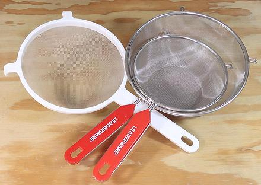

Mesh Strainers

Strainers of several sizes should be in every kitchen. I get the most use
from a 7 inch, and plenty of use from a 10 inch with helper handle which
straddles my sink very conveniently. I have, for many years, used a smaller
nylon strainer like the one in the photo for washing rice, because standard
American wire strainers were too coarse to keep grains from escaping.
The two wire strainers in the photo are Asian, and have a very much finer
mesh than the standard American strainer, but today, there are many choices for
mesh fineness available in North America.
More on Kitchen Gear.
ke_strainz 220304 - www.clovegarden.com
©Andrew Grygus - agryg@clovegaden.com
Photos on this
page not otherwise credited are © cg1 -
Linking to and non-commercial use of this page permitted